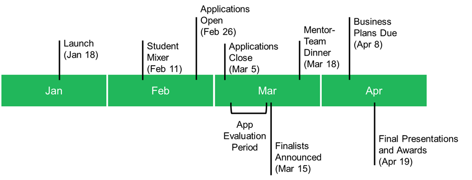

SUTD's premier student-run business competition.
Spend one month working with mentors and experienced entrepreneurs to develop your innovative technologies
and business ideas into investor-ready pitches, and stand to win over $10,000 in the process.
First Round: February 26
Your team should submit an executive summary of your business online before march 5, about 3 pages long. The executive summary will be broken into ten sections:- Company name
- Team members (First Name, Last Name, email address, affiliation with SUTD)
- Summarize the market and potential creation and capture of value. This should be your elevator pitch. (500 characters with spaces)
- Describe the problem and market you are addressing. (1000 characters with spaces)
- Describe the value creation proposition. (1000 characters with spaces)
- Define the value capture proposition. (1000 characters with spaces)
- Who are your potential competitors? (1000 characters with spaces)
- Explain how each team member will distinctively help the business venture. (1000 characters with spaces)
- What actions or steps will you take to engage with customers and optimize the product-market fit in the next 3-6 months? (1000 characters with spaces)
- Optional additional 3 A4 pages of material (PDF upload) to be considered by judges.
- Value Creation: Has the team clearly identified a significant problem, and compellingly articulated a scalable solution to it?
- Value Capture: Has the team persuasively articulated how it will earn revenue from the market's adoption of its solution?
- Credibility: Will the team be able to leverage the prize money to succeed in their plan?
Second Round: March 15
8-12 teams will be selected as finalists. Your team will be paired will mentors from startups and industry, and you'll spend three weeks working with your mentor on your own time to refine your business model and develop your pitch. At the end of the second round, each team must have a 5-page business plan and a 5 minute pitch.Final Pitch: April 20
You'll pitch your business idea to a panel of experienced judges, including venture capitalists, startup founders, and industry experts. Your pitch and 5-page business plan will be judged on four metrics:- Value Creation: Has the team clearly identified a significant problem, and compellingly articulated a scalable solution to it?
- Value Capture: Has the team persuasively articulated how it will earn revenue from the market's adoption of its solution?
- Credibility: Will the team be able to leverage the prize money to succeed in their plan?
- Quality of Plan: Has this team determined an appropriate, financially viable plan to successfully commercialize this product?
2016 Timeline

With support from Singapore University of Technology and Design and
The MIT Club of Singapore.